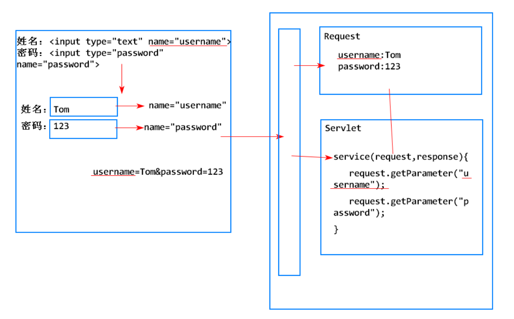
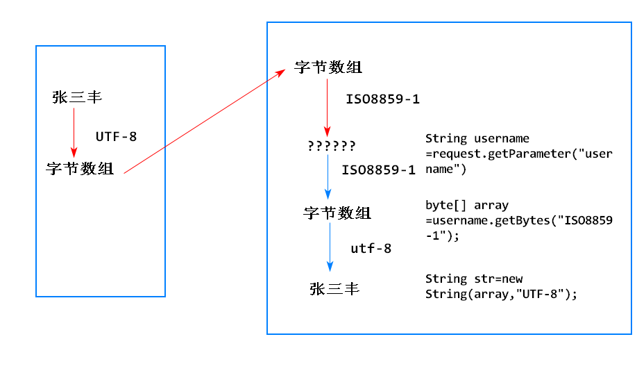

1.狭义上它是实现了servlet接口的java类
2.Servlet是运行在Web服务器上的代码片段(组件),用户处理http请求,是SUN公司定义的javaEE规范
可以简化Web服务端的开发,将复杂的网络通信细节(网络协议)封装到webService中,开发者仅需要提供servlet代码就可以完成Web服务端的开发
1. 创建一个java类,并让其实现servlet接口.
声明一个类，继承HttpServlet
1. HttpServlet是Sun公司提供的Servlet接口的一个实现类
2. HttpServlet实现了Servlet接口中所有的抽象方法
3. 开发者仅需要继承该类，重写所需使用的方法即可
1. 浏览器根据url的域名+端口号和服务器建立连接
2. 浏览器生成请求数据包，并发送请求数据包
3. 服务器收到请求数据包，解析请求数据包，创建request和response对象
4. 服务器将请求数据存入request对象中
5. 服务器调用Servlet的service()，将request和response传入
6. Servlet的service()从request中获取请求数据，将生成的响应数据写入response中
7. 服务器从response中读取响应数据，生成响应数据包，发送给浏览器
8. 浏览器解析响应数据包，在页面上显示响应内容
指可以接受用户请求,为用户提供响应的程序
可以为servlet提供运行环境支撑的程序
tomcat既是Web服务器也是Web容器
由Web服务器负责从请求数据包中解析请求数据，封装好发送给Servlet，开发者在Servlet仅需要调用API，就可以获取数据
1. 通过request对象获取
2. request对象提供了一个API: String value = request.getParameter(String name);

用户提交表单到服务器,servlet接收到底是乱码
1. 浏览器对表单内容编码时,所使用的编码规则是html头标签中charset属性是一致的,当前是UTF-8
2. tomcat对请求参数进行解码是默认使用的是ISO8859-1
3. 编码规则和解码规则不一致导致乱码问题
可以使用request API来解决乱码
对于get请求,tomcat提供了另一种方案
还有一种手动编码
http将请求方式分为8种,其中最常用的用get和post
不同的请求方式所适用的场景及特点不同的，有针对性的使用可以提高请求的效率
1. get请求代表客户端向服务端获取数据
2. 特点:
请求参数直接拼接在url后面
3. 什么情况下会用到get请求:
1. post请求表示浏览器像服务端发送数据
2. 特点:
1. get请求表示向服务端获取数据,post请求表示向服务端提交数据
2. get请求直接将请求参数拼接在url后,显示在浏览器地址栏,不安全,而且长度有限制
3. post请求将请求数据放在请求正文中,不会显示在浏览器地址栏,相对get安全,而且数据大小没有限制.

重定向是服务端在一次响应是通知浏览器访问指定的url
业务需要,比如访问前,必须先登录
原理:302响应状态码,和location的响应头

API:
response.sendRedirect(String url);
1.
2.
1.实例化 2.初始化 3.就绪 4.销毁
servlet默认是当第一次servlet被访问时,才实例化对应的servlet.而且它是单例模式,创建后,多次访问任是同一个servlet
对象但是也可以在服务启动时实例化对象,就是在web.xml文件中,<servlet>中添加<load-on-startup>标签,如果其对应的值
大于0,那么就可以在容器启动的时候就实例化对象,而且其值越小,实例化的优先级越高
初始化在servlet实例化后执行,具体就是调用init()方法,如果必要,可以重写该方法,在其中添加逻辑
初始化后就是就绪状态,每当有请求访问servlet,就会调用对应servlet的service()方法
当服务器关闭时,会销毁servlet,具体就是调用destroy()方法,可以重写该方法,添加逻辑
1. sun公司定义的接口,所有的servlet都必须直接或间接的实现该接口
2. 该接口中有5个方法
该类实现了servlet接口
并重写了初service()以外的其他方法.
1. HttpServlet继承了GeniricServlet
2. 添加了大量处理http协议的方法
3. HttpServlet 实现了service()方法，判断用户的http请求方式，调用对应的doGet/doPost/doDelete等方法
4. 开发者仅需要重写 doGet()或者doPost()，在其中提供处理逻辑即可
5. 开发者也可以直接重写 service(HttpServletRequest, HttpServletResponse)，提供处理逻辑
1. ServletConfig封装了web.xml中servlet的配置信息
2. 一个servlet对应一个ServletConfig实例
3. 一个ServletConfig只包含一个servlet的配置信息

获取servlet的配置信息
继承HttpServlet后,可以调用getServletConfig()方法,得到ServletConfig对象
ServletConfig servletConfig = getServletConfig();
String value = servletConfig.getIniParameter(name);
1. jsp是sun公司提出的用于动态生成响应的技术规范,用于解决servlet不适合输出html内容的问题.
2. jsp非常向html文档,可以直接写html内容,同时还可以嵌套java代码
3. jsp是以.jsp为后缀的文件,在第一次访问时,容器会将其转化为一个servlet

可以简化web服务端的开发,开发者仅仅需要提供html内容,就可以动态生成响应内容

1. 创建一个以.jsp结尾的文件
2. 在文件中添加要输出的内容 a. html的内容(css,javaScript) b. Java代码 c. JSP的指令
1. JSP中所有html的内容可以直接按照html的语法来写
2. 所有html的内容会被当成字符串传入 out.write()方法中，内容不会变化
1. JSP表达式
2. jsp脚本片段
import 属性:
import属性指明翻译后的类该导入哪些包
pageEncoding 属性:
可以解决JSP输出内容的乱码问题
请求转发是在一次响应中一个web组件将一请求交给另一个web组件处理
一般情况下是一个servlet处理数据然后交给jsp进行响应
可以调用多个web组件,让不同组件发挥其优势,提高开发效率
1:绑定数据:
存:request.setAttribute(String name,Object value);
取:request.getAttribute(String name);
2:获取请求转发器:
RequestDispatcher rd=request.getRequestDispatcher(url);
url 是目标组件的url
3:转发请求
rd.forward(request,response);
1. 对浏览器是一次请求一次响应
2. 浏览器地址栏不会发生变化
3. 请求转发的目标是有限的,只能转发到当前项目内部的组件
1. 请求转发：一个web组件对请求进行初步的处理，交给另一个web组件来生成响应内容
2. 请求重定向：服务器在一次响应中通知浏览器去请求一个新的url
3. 请求转发是一次请求一次响应，请求重定向是两次请求两次响应
4. 请求转发的目标是有限制的，仅能转发当前web应用内部的组件；请求重定向的目标是没有限制的,既可以是当前项目内部的资源，也可以是其它的网站
5. 请求转发可以利用request对象实现数据的共享
6. 请求转发可以利用request对象实现数据的共享
用于为了一个目的,从打开浏览器开始,到关闭浏览器未知,期间的多次请求和响应就是会话.
会话状态就是多次请求和响应中产生的数据
就是添加,更改,删除会话中的数据
因为http协议是没有状态的,每一次请求都是全新的请求.
Cookie: 把会话状态保存在浏览器的方式
Session: 把会话状态保存在服务端的方式
服务端发送set-cookie响应头,向浏览器设置cookie
浏览器发送cookie请求头,向服务端提交cookie数据
1:默认情况下,cookie的有效时间是在浏览器打开,到一次浏览器关闭
2: 可以设置cookie的存活时间,一旦设置了存活时间,浏览器就会将cookie存放在本地磁盘上,直到
达到其寿命
cookie.setMaxAge(int second);
1: Cookie在保存时有2个和路径相关的属性： 1. 域名(domain) 2. 路径(path)
2: 浏览器发送请求时，会自动比较当前请求的url和cookie的domain+path的关系
如果用户请求的url和Cookie的domain+path一致，或者是Cookie的domain+path的子路径，则在本次请求中携带该Cookie
Cookie: domain=/localhost path=/servlet07/user
domain+path= /localhost/servlet07/user
url1= /www.taobao.com 不携带 url2= /localhost/servlet05 不携带 url3= /localhost/servlet07 不携带
url4= /localhost/servlet07/user 携带 url5= /localhost/servlet07/user/test.jsp 携带
默认情况下，Cookie的路径和发送该Cookie的Servlet的父路径一致
可以通过API修改一个Cookie的path
服务器发送一个和拟删除的Cookie同name，同path的Cookie,同时设置maxAge=0，浏览器收到该Cookie后，会替换之前的Cookie,由于maxAge=0，因此直接删除该Cookie
浏览器按照一个Cookie的name+path+domain的组合来唯一标识一个Cookie
如果向Cookie中添加中文的value,会报500 Control character in cookie value or attribute.
如果向Cookie中添加中文的value,会报500 Control character in cookie value or attribute.
1. 异常原因:根据http协议，cookie中的内容使用ASCII字符集，如果尝试向Cookie中添加中文，就会报异常。
2. 解决方案:
向cookie中存数据时:
向Cookie中取数据时:
1. 可能被用户删除，因此不适合保存特别关键的数据
2. Cookie保存的数据量是有限的，大约4kb
3. 每个域名的Cookie的数量也是有限的,每个网站约50个
4. Cookie中仅可以保存字符串
5. Cookie可以被用户禁用
session是服务端用于保存会话状态特殊对象
1. 服务器为用户创建一个Session对象，来保存该用户的会话状态
2. 服务器将该Session对象的sessionId，以JSESSIONID的Cookie发送给用户
3. 用户下次请求时，会自动携带JSESSIONID的Cookie
4. 服务器通过JSESSIONID的Cookie,找到用户对应的Session对象

1. HttpSession session=request.getSession(boolean);
true: 如果用户之前有Session，直接使用该Session，
如果用户之前没有Session，就会用户创建一个Session
有则使用，无则创建
false: 有则使用，无则返回null
2. HttpSession session=request.getSession();
等同于 request.getSession(true);
有则使用，无则创建
1. 绑定数据
session.setAttribute(String name,Object value);
2. 获取数据
session.getAttribute(String name);
1. 自动销毁 服务器会自动记录一个Session的存活时间，会为Session设定一个超时时间，当用户超过这个时间都没有访问Session时，会销毁该Session
<session-config>
<!-- 配置session的超时时间，以分钟为单位，默认30分钟 -->
<session-timeout>15</session-timeout>
</session-config>
2. 手动销毁
3. 钝化和活化
钝化：当服务器正常关闭时，未超时的Session会被自动保存到服务器的硬盘上
活化：当服务器启动时，之前硬盘上保存的Session会被读取到内存中，继续工作
1. Session的安全性和稳定性较高,因为是保存再服务器上的
2. Session可以保存的数据理论上是没有限制的.但是不建议再session中保存大量信息,Session中的信息是保存在内存上的,如果内存不足,则保存在硬盘上.
3. Session依赖于Cookie,如果在浏览器上禁用了Cookie,Session将失效.
4. Session中保存数据的时间较短,一般是30分钟

Sun公司提供的一个Web组件,可以对请求和响应进行拦截,以执行特定的功能

开发一个Filter类,实现Filter接口
1) 实现Filter中所有的抽象方法
doFilter(ServletRequest,ServletResponse,FilterChain)
ServletRequest 是 HttpServletRequest的父接口，HttpServletRequest提供了一些额外的和Http协议相关的方法
ServletResponse是 HttpServletResponse的父接口，HttpServletRequest提供了一些额外的和Http协议相关的方法
FilterChain 过滤器链
调用chain.doFilter()将导致过滤器链上的下一个过滤器被调用， 或者如果当前调用的Filter是过滤器链上的最后一个Filter,将导致链尾的资源被调用

2) 在web.xml中配置
<filter>
<filter-name>
<filter-class>
</filter>
<filter-mapping>
<filter-name>
<url-pattern>
</filter-mapping>
url-pattern配置的是该Filter所拦截的url
如果用户请求的url与Filter的url一致，或者是它的子路径，该Fitler就会生效
一个Filter拦截多个url可使用 * 通配符，如 /user/* 拦截用户对user目录下所有资源的请求
如果一个请求被多个Filter所拦截,这些Filter生效顺序有所配置的<filter-mapping>所决定的
1) 实例化
服务器启动时，加载并实例化所有在web.xml中配置的过滤器
2）初始化
一个Filter被实例化之后，马上调用它的init()方法
3）就绪
每当用户请求的url和当前Filter匹配时，服务器会自动调用该Filter的doFilter()，执行拦截的逻辑
4) 销毁
当服务器关闭时，会销毁所有的Filter,在销毁一个Filter之前，会调用它的destory()方法
1. 代表了Filter在web.xml中配置的对象
2. 服务器在调用一个Filter的init()方法时，会将创建好的FilterConfig对象作为参数，传入该方法
3. API
String value=config.getInitParameter(String name);
通过参数名获取参数值
Enumeration<String> names=config.getInitParameterNames();
获取web.xml中为该Servlet配置的所有初始化参数的名称
在web.xml中为一个Filter配置初始化参数
<filter>
<display-name>TimeFilter</display-name>
<filter-name>TimeFilter</filter-name>
<filter-class>filter.TimeFilter</filter-class>
<!-- 为一个Filter配置初始化参数 -->
<init-param>
<param-name>username</param-name>
<param-value>admin</param-value>
</init-param>
<init-param>
<param-name>password</param-name>
<param-value>123</param-value>
</init-param>
</filter>
统一资源定位符,用来定位互联网上的一个资源
http://localhost:8080/servlet09/user/addUser.jsp
http:// -> 访问使用的协议
localhost -> 域名，会被自动翻译成 ip地址，找到一个服务器 :8080 -> 端口号 ， 找到服务器上的一个程序(Tomcat)
/servlet09/user/addUser.jsp是给Web服务器用的
/servlet09-> 项目的路径（ContextPath），以Tomcat为例，Tomcat会去wtpwebapps下找一个叫servlet09文件夹

相对路径:
1. 从当前文件到目标文件所经过的路径，称为相对路径
2. 相对路径的写法
1.从当前目录去找 css/style.css
2.从上级目录去找 ../css/style.css
3. 相对路径的问题
1.当前文件的位置一旦发生变化，路径可能失效
绝对路径:
1. 从一个固定的位置出发，到目标文件所经过的路径，称为绝对路径
2. 绝对路径的写法
1. 以/开头
2. 相对一个固定的位置，一般是当前项目的父路径
3. 优势
1. 一个文件的位置即使发生变化，它也可以通过绝对路径找到另一个文件，路径不需要修改
当服务器启动后，会按顺序加载所有的web应用，每当加载完一个web应用后，会创建一个ServletContext对象，唯一代表该web应用。
每个web应用有一个servletContext对象
1.所有的web组件和用户访问的都是同一个ServletContext对象
2.如果不同的用户使用相同的name储存数据那么,数据会被覆盖
3.不适合保存不同用户各自的数据,适合保存大家共同的数据
<context-param>
<param-name>encode</param-name>
<param-value>UTF-8</param-value>
</context-param>
String value=sc.getInitParameter(name);
String path=sc.getRealPath("");
获取ServletContext对象
ServeltContext sc=getServletContext();
ServletContext sc=request.getServletContext();
共享数据
sc.setAttribute(String name,Object value);
Object value=sc.getAttribute(String name);
1.Context 上下文
2.ServletContext Servlet的上下文 -> 就是Tomcat
3.ServletContext 设计了一些API，允许Servlet和Tomcat通信，获取Tomcat的一些信息
Sun公司提供的一类特殊的web组件，可以对一些特定的事件进行监听，执行具体的处理逻辑。
不同的web组件对应不同的监听器